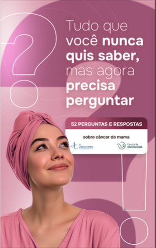

O que significa o resultado? O que perguntar ao médico? O que esperar do tratamento? Respostas claras, sem jargão, de quem trata câncer todos os dias.

+ 48 respostas cobrindo diagnóstico, tratamento, cirurgia, genética, efeitos colaterais e vida após o câncer.
A categoria BI-RADS 4 indica uma alteração suspeita de malignidade — mas não confirma câncer. Ela é subdividida em 4A, 4B e 4C, com riscos que variam de 2% a 95%. Em todos os casos, o próximo passo é a biópsia, que é o único exame capaz de confirmar ou descartar o diagnóstico definitivamente.
→ A resposta completa, com o que esperar da biópsia, está no guia.O triplo negativo é o subtipo mais agressivo — não expressa receptores hormonais nem a proteína HER2, o que limita algumas opções. Mas agressivo não significa sem cura. O tratamento envolve quimioterapia e, em casos específicos, imunoterapia. A resposta patológica completa, quando ocorre, está associada a excelentes resultados.
→ A resposta completa, com dados de sobrevida e tratamento, está no guia."Saí da consulta com BI-RADS 4 e não entendi nada do que o médico havia me dito. Pesquisei na internet e piorei ainda mais. O guia foi a primeira coisa que me deu respostas de verdade — o que significa cada categoria, o que esperar da biópsia, o que perguntar. Na consulta seguinte me senti completamente diferente."
"Minha mãe recebeu o diagnóstico de tumor triplo negativo e eu não fazia ideia do que isso significava. Li o guia inteiro naquela noite. Entendi o subtipo, as opções de tratamento, por que a quimioterapia era necessária. Consegui acompanhar as consultas dela de um jeito completamente diferente."
Se o material não atender ao que você esperava, devolvemos 100% do valor em até 7 dias. Sem perguntas, sem burocracia.
Imediatamente. Assim que o pagamento for confirmado, você recebe um e-mail com o link para download do PDF. Acesso em menos de 2 minutos.
Não, e nunca vai. Ele existe para te preparar melhor para a consulta — para que você chegue com as perguntas certas e entenda as respostas. O acompanhamento médico é insubstituível.
Sim. O PDF abre em qualquer smartphone, tablet ou computador. Você pode salvar e consultar offline quando precisar.
Sim. Grande parte das perguntas vem de filhos, maridos, esposas e amigos que querem entender o que está acontecendo com quem amam.
Sim. As respostas refletem as diretrizes atuais de diagnóstico e tratamento, incluindo avanços recentes como HER2 low e novas terapias-alvo.
PIX (aprovação imediata), cartão de crédito, boleto e carteiras digitais. Processamento seguro pela Kiwify.
Acesse agora e leia ainda hoje. Menos ansiedade, mais clareza para o que vem pela frente.
Comprar agora por R$ 67 — PIX ou cartão → Acesso imediato por e-mail · PDF · Garantia de 7 dias